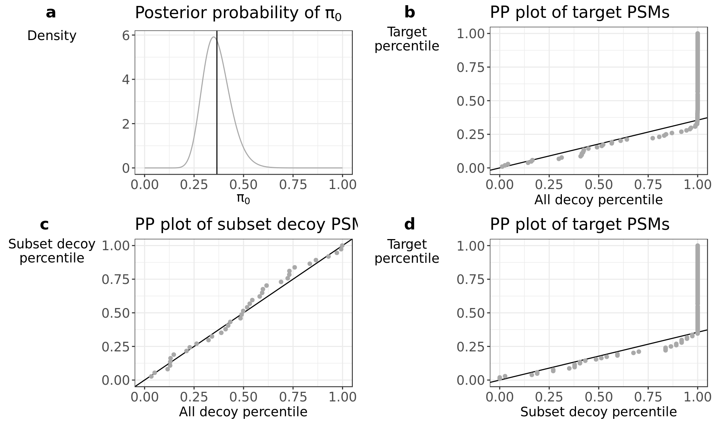

In this vignette we will demonstrate how to use the ‘search all, asses subset’ strategy (all-sub) to correctly calculated the FDR on a PSM subset of interest in a shotgun proteomic experiment.
In short, the basic all-sub workflow comprises the following steps:
A preprint of the manuscript on the search-all-assess FDR procedure can be found on bioRxiv (https://doi.org/10.1101/094581).
Mass spectrometrists should search for all peptides, but assess only the ones they care about
Adriaan Sticker, Lieven Clement, Lennart Martens (2017)
with \(f(x)\) the target distribution of the test statistic, \(f_0(x)\) the mixture component corresponding to incorrect PSMs, \(f_1(x)\) the mixture component corresponding to the correct PSMs and \(\pi_0\) the fraction of incorrect PSMs.
Based on the mixture distribution the FDR can be defined as the posterior probability \[\begin{equation} \text{FDR}(x) = Pr[\text{PSM is incorrect}\vert X\geq x]. \end{equation}\] Let \(F(x)\), \(F_0(x)\) and \(F_1(x)\) indicate the complementary cumulative distribution function (CCDF) \[\begin{equation} F_{.}(x)=\int\limits_{X=x}^{+\infty} f_{.}(X) dx \end{equation}\] so \[\begin{equation} F(x)= \pi_0 F_0(x) + (1-\pi_0) F_1(x) \end{equation}\] and the FDR becomes \[\begin{equation} \text{FDR}(x)=\frac{\pi_0 F_0(x) }{F(x)} \end{equation}\]The empirical Bayes/two-groups approach also has the great virtue that independence of the scores is not necessary as long as (1) the estimated CCDF of the marginal distribution is roughly unbiased and (2) the null component is estimated empirically (Efron 2008).
In a competitive target decoy search, FDRs are estimated by dividing the number of accepted decoys PSMs by the number of accepted target PSMs at a certain MS-GF+ score cutoff (Elias and Gygi 2007). For FDR estimation in the subset of interest, use only target and decoy PSMs belonging to the subset in the calculation. We assure a monotonic increase of FDR estimates with decreasing score values by replacing the FDR at a particular score \(x\) by the minimum TDA FDR in the interval \([-\infty,x]\).
Note, that in a competitive target decoy search the FDR with TDA is estimated by \[\begin{equation} \widehat{\text{FDR}}(x) =\frac{\# decoys | X\geq x}{\# targets | X\geq x}, \end{equation}\] which can be rewritten as \[\begin{eqnarray*} \widehat{\text{FDR}}(x) &=&\frac{\frac{\#decoys}{\#targets}\frac{\# decoys | X\geq x}{\# decoys}}{\frac{\# targets | X\geq x}{\# targets}}\\ &=&\frac{\hat \pi_0 \bar F_0(x)}{\bar F(x)} \end{eqnarray*}\] with \(\bar F_0(x)\) and \(\bar F(x)\) the empirical complementary cumulative distribution functions (ECCDFs) estimated using decoy and target PSMs, respectively. So, in a competitive TDA the FDR implicitly relies on the estimator of the proportion of incorrect PSMs among the targets \[\begin{equation} \hat \pi_0=\frac{\#decoys}{\#targets}. \end{equation}\]In small subsets we typically can expect a low number of decoy PSMs and the \(\bar F_0(x)\) will be a poor estimator of \(F_0(x)\). For improving the stability of the target-decoy approach in small subsets we propose to estimate the mixture component for incorrect PSMs using a large set of decoys with similar properties as the incorrect subset PSMs. Hence, the method only relies on the assumption that the incorrect target PSM scores follow the same distribution as the PSM scores of the decoy set.
This large set of decoys PSM scores can be designed by the user. However often, the set of decoys in the complete search seems a good candidate set. This allows for the estimation of the mixture component of the incorrect PSMs and the marginal distribution of all PSMs non-parametrically, i.e. based on the ECCDFs \(\bar F_0(x)\) using a large decoy set (e.g. of the complete search) and \(\bar F(x)\) derived from the targets in the subset, respectively.
The mixture proportion \(\pi_0\) can still be estimated based on the ratio of the number of decoys on the number of targets in the subset upon a competitive target decoy search. However, the estimator \(\hat \pi_0\) often becomes zero in very small subsets, inducing an FDR estimate of zero for the set of all subset target PSMs. We therefore propose to use the estimator \[\begin{equation} \hat \pi_0= \begin{cases} \frac{\#\text{decoys}_\text{subset}+1}{\#\text{targets}_\text{subset}}, & \text{if}\ \#\text{targets} > \#\text{decoys}\\ 1, & \text{if}\ \#\text{targets} \leq \#\text{decoys}\\ \end{cases} , \end{equation}\]which has a lower bound of \(\frac{1}{\text{targets}_\text{subset}}\) and an upper bound of 1. Note that this estimator has an upward bias in small subsets, which disappears for moderate to large subsets. In the extreme case that we observe only one target PSM, \(\hat \pi_0\) is 1 and the FDR estimator reduces to a regular p-value.
Note, that a conservative estimator of the FDR is also available using the link between the Bayesian and the Benjamini-Hochberg (BH) FDR procedure, i.e. by setting the mixture proportion of the mixture component for incorrect PSMs to \(\pi_0=1\) (Efron 2008).
\[\begin{equation} \widehat{\text{FDR}}(x)=\frac{\bar F_0(x)}{\bar F(x)}. \end{equation}\]In very small subsets, the latter FDR estimator is still valid as long as a good estimator of the mixture component for incorrect PSMs is available. Benjamini and Hochberg, 1995, for instance, included an example with 15 comparisons in their seminal paper (Benjamini and Hochberg 1995). Also note that their FDR estimator also reduces to a regular p-value in the extreme case that the subset of interest consists of one target PSM, i.e. we set \(\pi_0=1\) and \(\bar F=1\) for this extreme edge case.
The ECCDF \(\bar F_0(x)\) will be zero for every target PSM with a score higher then the maximum decoy PSM score, inducing an FDR estimate of zero for these target PSMs. Decreasing the total number of decoys will lower the maximum decoy PSM score and thus lower the threshold at which the estimated FDR of the target PSMs will be zero. This means when only few decoys PSMs are observed, FDR estimates have high sample-to-sample variability and are biased to lower values. FDR estimates are too liberal and underestimates the true FDR. Therefore we recommend to have at least 1000 decoys to obtain sufficiently reliable FDR estimates in most situations. Lastly, we assure a monotonic increase of FDR estimates with decreasing score values by replacing the FDR at a particular score \(x\) by the minimum TDA FDR in the interval \([-\infty,x]\).
In this vignette we use data from a Pyrocococus furiosis sample run on a LTQ-Orbitrap Velos mass spectrometer. The data can be found in the PRIDE repository with indentifier PXD001077. The Pyrocococus furiosis reference proteome fasta file was downloaded from Uniprot on April 22, 2016. In this use case we are interested in Pyrococcus proteins related to transferase activity as defined by their Gene Ontology identifier (GO:0016740). A fasta file with these proteins was also downloaded from Uniprot.
In theory, the all-sub method can be used on the results from any search engine that report peptide spectrum matches (PSMs) with a score. However, this R package only provides a parser for the MS-GF+ MZident output files. Output from other search engines should be parsed and presented in the format of the output from the ‘parse_msgf_mzid()’ function (see ‘help(saas::parse_msgf_mzid)’in R). It should be realtively straightforward to adapt the code from ’parse_msgf_mzid()’ to work with other search engines. It’s very important that searches are run on a concatenated target-decoy database.
The Pyrococcus dataset was searched against all Pyrococcus proteins with the MS-GF+ Search engine (v2016.10.26). The MS-GF+ parameter settings used are:
-t 10ppm -ti 0,1 -tda 1 -m 3 -inst 1 -e 1 -protocol 0 -ntt 2 -minLength 6 -maxLength 30
-minCharge 2 -maxCharge 4 -n 1The modification file provide to MS-GF+ is:
NumMods=2
57.021464,C,fix,any,Carbamidomethyl
15.994915,M,opt,any,Oxidation
H1O3P1,STY,opt,any,Phospho
For an explanation on how to use MS-GF+ and an explanation on all parameter settings, please read the MS-GF+ documentation at:
https://omics.pnl.gov/software/ms-gf
The MS-GF+ MZident output file from this search is included in this package for use in subsequent analysis steps.
## Load the saas library
library(saas)
## Load some convenience functions
library(dplyr, quietly = TRUE, warn.conflicts = FALSE)
## Location of the zipped data files
zip_file_path = system.file("extdata", "extdata.zip", package = "saas")
## Unzip and get the (temporary) location of the mzid file with the MS-GF+ search results.
mzid_file_path = unzip(zip_file_path, 'pyrococcus.mzid',exdir = tempdir())
## Read and parse the mzid file
data = parse_msgf_mzid(mzid_file_path)
glimpse(data)## Observations: 15,639
## Variables: 7
## $ spec_id <dbl> 9834, 10918, 12207, 12179, 11387, 11027, 7833, 9...
## $ sequence <chr> "GLEVSGYNCYIYPAMALAYGTSAIGAHHK", "MLVDSLGDIVITND...
## $ protein_id <chr> "Q8U1K3|Formaldehyde:ferredoxin", "Q8TZL6|Thermo...
## $ score <dbl> 2.383677e-34, 6.238274e-32, 2.329653e-31, 1.0498...
## $ database <chr> "complete", "complete", "complete", "complete", ...
## $ decoy <lgl> FALSE, FALSE, FALSE, FALSE, FALSE, FALSE, FALSE,...
## $ database_size <dbl> 2051, 2051, 2051, 2051, 2051, 2051, 2051, 2051, ...By default, the ‘preprocess()’ function removes all PSMs that assigned to both a decoy and target sequence. All rows in the dataframe that belong to the same PSMs (eg. one PSMs that match multiple proteins) are collapsed into one row.
When a path to a fasta file with the protein_ids from a subset of proteins in the fasta headers is provided, a new column is added that indicates if this PSM belongs to this subset of interest. These protein_ids should match the protein_ids from orginal fasta file used in the MS-GF+ search (and as indicated in the protein_id column in the data frame). This information is needed to use the all-sub method.
Optionally, it’s also possible to remove PSM’s that can be assigned to multiple proteins.
## Unzip and get the (temporary) location of the file with fasta headers containing
## the protein_ids from the protein subset of interest.
fasta_file_path = unzip(zip_file_path, 'transferase_activity_[GO:0016740].fasta', exdir = tempdir())
## Preprocess the data.
data_prep = preprocess(data, is_subset = fasta_file_path)
glimpse(data_prep)## Observations: 15,107
## Variables: 9
## $ spec_id <dbl> 0, 1, 2, 3, 4, 5, 6, 7, 8, 9, 10, 11, 12, 13, 14...
## $ sequence <chr> "YEQIPWTQECSK", "NVQQKWFGK", "NLLESPKIK", "KHLEQ...
## $ decoy <lgl> FALSE, TRUE, TRUE, FALSE, FALSE, FALSE, TRUE, FA...
## $ database <chr> "complete", "complete", "complete", "complete", ...
## $ database_size <dbl> 2051, 2051, 2051, 2051, 2051, 2051, 2051, 2051, ...
## $ score <dbl> 2.560707e-05, 1.458271e-04, 9.241630e-06, 1.7355...
## $ subset <lgl> FALSE, TRUE, FALSE, FALSE, FALSE, FALSE, FALSE, ...
## $ non_subset <lgl> TRUE, FALSE, TRUE, TRUE, TRUE, TRUE, TRUE, TRUE,...
## $ protein_id <chr> "Q8U285|Uncharacterized", "Q8U168|Glycosyl", "P8...The implementation of the all-sub in this packages adopt the target-decoy approach for FDR estimation. A subset FDR can be obtained by applying TDA on the subset target and decoy PSMs.
However, in very small subsets with little subset target and decoy PSMs, there can be a large sample-to-sample variability on the FDR estimates. We provide extensions to the basic subset TDA FDR to obtain more stable FDR estimates. Key is the use of a large set of decoy PSMs to reliable estimate the distribution of incorrect target PSM scores. By default we use all decoys from the complete search (subset and non-subset PSMs). The user can also define another set of extra decoys and use this for FDR calculation (see example 2).
Bot the classical TDA FDR and our more stable TDA FDR relie on the assumption that the distribution of incorrect target PSM scores can be approximated by the decoy PSM score distribution.
In this package we provide diagnostic plots to verify the assumption that the decoy PSM score distribution follows the incorrect target PSM distribution. Tthe ‘score_higher’ parameter in ‘plot_diag()’ indicates if higher score values mean a more confident PSM. We take the MS-GF+ SpecEValue as the PSM score for FDR calculation and smaller SpecEValue indicate a better match. Therefore we have to set the ‘score_higher’ parameter to ‘FALSE’. Note that in the manuscript we used \(- log (\)MS-GF+ SpecEValue\()\) as the score for visualisation purposes. Please consult the documentation of your search engine of choice on how to interpret the PSM score.
diagnostics = plot_diag(data_prep, score_higher = FALSE)
diagnostics$allPanel a shows the posterior distribution of pi_0 given the observed number of target and decoy PSMs in the subset. The vertical line indicates the conservative pi_0 estimate used in the calculations. At very high \(\pi_0\) uncertainty (broad peak), you can also opt to use the Benjamine Hochberg procedure to minimize sample to sample variability which would mean that pi_0 would be set to 1 (see FDR_BH in the next section). However, this will come at the expense of too conservative PSM lists.
The distributional assumption for the decoys can be verified through a PP-plot where the empirical Cumulative Distribution Function (eCDF) of the decoys is plotted against the eCDF of the subset target PSMs. The PP-plots in panel b - d display the target subset PSMs plotted against all decoy PSMs from the complete search, the decoy subset PSMs plotted against all decoy PSMs from the complete search, and the target subset PSMs plotted against the decoy PSMs from the complete search, respectively. The full line in panel b and d indicates a line with a slope of \(\pi_0\). The full line in panel c indicates the identity line. When the distributional assumption holds then the first part of the plot in b and d should be linear with a slope that equals \(\pi_0\). The second part of the plot deviates from the line towards higher percentiles and will ultimately become vertical (decoy percentile = 1). If we see this profile in panel b, we have a good indication that the set of decoys from the complete search is representative for the mixture component for incorrect PSMs of the target mixture distribution. Deviations from this pattern might be subtle, therefore we provide the PP plots in c and d to support the conclusion drawn from panel b. When there is high uncertainty on pi_0 as indicated by a, then the linear pattern in the data points might deviate from the drawn solid line, but should still be more or less linear. The PP-plot in panel c shows the subset decoy PSMs plotted against all decoy PSMs. The whole plot should follow the identity line, indicating that the complete set of decoys is a good representation of the subset decoys. To verify that the subset decoys are representative for the mixture component for incorrect PSMs of the target mixture distribution, we look at the PP-plot of the subset decoys against the subset targets in panel d. The profile should look as described for panel b. If the profile matches in panel d but does not for panel b, then we suggest to not use the extra decoy set and use only the subset decoys for FDR estimation. When the profile does not match in panel d, the subset decoys might not be representative for incorrect PSMs. This can indicate that \(\pi_0\) is estimated incorrectly, since this is based on the subset PSM scores. In this case, the first part of the plot in panel d can deviate from the (incorrect) \(\pi_0\) slope line. But if this first part is linear, it still indicates that the extra set of decoys is representative for the mixture component of incorrect target PSMs. Since \(\pi_0\) is unknow in this case we set \(\pi_0\) to 1 (see FDR_BH in the next section).
We can conclude from the above diagnostic plots that the large decoy set is an appropiate candiate set to estimate the incorrect subset target PSM distribution.
The output from ‘preprocess()’ can be immediatly used to estimate the FDR in the PSM subset of interest.
data_results = calculate_fdr(data_prep, score_higher = FALSE)
glimpse(data_results)## Observations: 15,107
## Variables: 13
## $ spec_id <dbl> 0, 1, 2, 3, 4, 5, 6, 7, 8, 9, 10, 11, 12, 13, 14...
## $ sequence <chr> "YEQIPWTQECSK", "NVQQKWFGK", "NLLESPKIK", "KHLEQ...
## $ decoy <lgl> FALSE, TRUE, TRUE, FALSE, FALSE, FALSE, TRUE, FA...
## $ database <chr> "complete", "complete", "complete", "complete", ...
## $ database_size <dbl> 2051, 2051, 2051, 2051, 2051, 2051, 2051, 2051, ...
## $ score <dbl> 2.560707e-05, 1.458271e-04, 9.241630e-06, 1.7355...
## $ subset <lgl> FALSE, TRUE, FALSE, FALSE, FALSE, FALSE, FALSE, ...
## $ non_subset <lgl> TRUE, FALSE, TRUE, TRUE, TRUE, TRUE, TRUE, TRUE,...
## $ protein_id <chr> "Q8U285|Uncharacterized", "Q8U168|Glycosyl", "P8...
## $ pi_0_cons <dbl> 0.3653846, 0.3653846, 0.3653846, 0.3653846, 0.36...
## $ FDR <dbl> NA, NA, NA, NA, NA, NA, NA, NA, NA, NA, NA, NA, ...
## $ FDR_BH <dbl> NA, NA, NA, NA, NA, NA, NA, NA, NA, NA, NA, NA, ...
## $ FDR_stable <dbl> NA, NA, NA, NA, NA, NA, NA, NA, NA, NA, NA, NA, ...We can choose in the output from three different all-sub FDR estimations: The estimated stable FDR at this score cutoff for subset PSMs.
The ‘transferase activity’ subset is rather small with 104 target and 37 decoy PSMs.
count(data_results, subset, decoy)## Source: local data frame [4 x 3]
## Groups: subset [?]
##
## subset decoy n
## <lgl> <lgl> <int>
## 1 FALSE FALSE 13158
## 2 FALSE TRUE 1808
## 3 TRUE FALSE 104
## 4 TRUE TRUE 37From the diagnostic plots we concluded that the set of decoy PSMs from the complete search is a good candidate set to approximate the incorrect target PSM distribution.
So, in this case it’s recommended to use the more stable FDR estimates in FDR_stable.
results_1_FDR = filter(data_results, subset, !decoy, FDR_stable >= .01)
glimpse(results_1_FDR)## Observations: 31
## Variables: 13
## $ spec_id <dbl> 85, 1361, 3519, 6026, 6857, 7516, 8462, 8490, 95...
## $ sequence <chr> "YKGRGFRK", "KLGENNER", "FGTFLLTILTK", "YKFKNNYR...
## $ decoy <lgl> FALSE, FALSE, FALSE, FALSE, FALSE, FALSE, FALSE,...
## $ database <chr> "complete", "complete", "complete", "complete", ...
## $ database_size <dbl> 2051, 2051, 2051, 2051, 2051, 2051, 2051, 2051, ...
## $ score <dbl> 5.231224e-05, 3.140562e-05, 7.486767e-06, 4.2052...
## $ subset <lgl> TRUE, TRUE, TRUE, TRUE, TRUE, TRUE, TRUE, TRUE, ...
## $ non_subset <lgl> FALSE, FALSE, FALSE, FALSE, FALSE, FALSE, FALSE,...
## $ protein_id <chr> "Q8U164|Glycosyl", "Q8U4L8|6,7-dimethyl-8-ribity...
## $ pi_0_cons <dbl> 0.3653846, 0.3653846, 0.3653846, 0.3653846, 0.36...
## $ FDR <dbl> 0.23333333, 0.17441860, 0.07317073, 0.21348315, ...
## $ FDR_BH <dbl> 0.63759109, 0.52501418, 0.21983740, 0.59408666, ...
## $ FDR_stable <dbl> 0.23296597, 0.19183210, 0.08032520, 0.21707013, ...At 1% FDR, we return 31 PSMs.
sessionInfo()## R version 3.3.3 (2017-03-06)
## Platform: x86_64-pc-linux-gnu (64-bit)
## Running under: Arch Linux
##
## locale:
## [1] C
##
## attached base packages:
## [1] stats graphics grDevices utils datasets methods base
##
## other attached packages:
## [1] dplyr_0.5.0 saas_0.0.0.9000
##
## loaded via a namespace (and not attached):
## [1] Rcpp_0.12.10 plyr_1.8.4 ProtGenerics_1.6.0
## [4] tools_3.3.3 digest_0.6.12 evaluate_0.10
## [7] tibble_1.3.0 gtable_0.2.0 shiny_1.0.0
## [10] DBI_0.6 yaml_2.1.14 parallel_3.3.3
## [13] stringr_1.2.0 knitr_1.15.1 hms_0.3
## [16] rprojroot_1.2 grid_3.3.3 cowplot_0.7.0
## [19] Biobase_2.34.0 R6_2.2.0 rmarkdown_1.4
## [22] ggplot2_2.2.1 readr_1.1.0 mzR_2.8.0
## [25] magrittr_1.5 backports_1.0.5 scales_0.4.1
## [28] codetools_0.2-15 htmltools_0.3.5 BiocGenerics_0.20.0
## [31] assertthat_0.2.0 mime_0.5 colorspace_1.3-2
## [34] xtable_1.8-2 httpuv_1.3.3 labeling_0.3
## [37] stringi_1.1.5 lazyeval_0.2.0.9000 munsell_0.4.3
## [40] markdown_0.7.7Benjamini, Yoav, and Yosef Hochberg. 1995. “Controlling the False Discovery Rate: A Practical and Powerful Approach to Multiple Testing.” Journal of the Royal Statistical Society: Series B 57 (1). Blackwell Publishing for the Royal Statistical Society: 289–300.
Efron, Bradley. 2008. “Microarrays, Empirical Bayes and the Two-Groups Model.” Statistical Science 23 (1): 1–22. doi:10.1214/07-STS236.
Elias, Joshua E, and Steven P Gygi. 2007. “Target-decoy search strategy for increased confidence in large-scale protein identifications by mass spectrometry.” Nature Methods 4 (3): 207–14. doi:10.1038/nmeth1019.
Sticker, Adriaan, Lieven Clement, and Lennart Martens. 2017. “Mass Spectrometrists Should Search for All Peptides, but Assess Only the Ones They Care About.” bioRxiv. Cold Spring Harbor Labs Journals. doi:10.1101/094581.